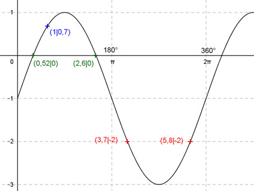
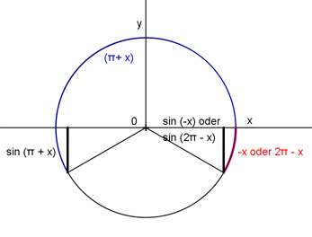

Aufgabe 197 Ergänzen Sie die Wertetabelle für x zwischen 0 und 2π: y = 2 sin(x) - 1 x 1 3,7 oder 5,8 y 0,7 -2 Amplitude = 2 ; Periode = 2π ; sin(x) um 1 Einheit nach unten verschoben. Berechnung der Nullstellen: 2 sin (x) - 1 = 0 |+1 --> 2 sin x = 1 |:2 --> sin x = 0,5 --> x = arc sin 0,5 = 0,52. x1 = 0,52 oder 29,8°, N2 = (π - 0,52) = 2,6  Funktionswert an einer Stelle x ermitteln: 1 * 180° x = 1 oder ---------- = 57,3° π f(1) = 2 sin (1) - 1 = 2 sin (57,3°) - 1 = 0,7 gerundet. Berechnung der x-Werte für y = f(x) = -2 f(x) = -2 eingesetzt,existiert zweimal zwischen π und 2π bzw. zwischen 180° und 360°. 2 sin(x) - 1 = -2 |+1 --> 2sin x = -1 |:2 --> sin x = -0,5 --> x = arc sin-0,5 --> x = -0,52, liegt nicht im Bereich zwischen 0 und 2π --> 3,7 * 180° x1 = (π + 0,52) = 3,7 oder ------------ = 212° π x2 = (2π - 0,52) = 5,8 oder 332,3° gerundet. (siehe Einheitskreis) 